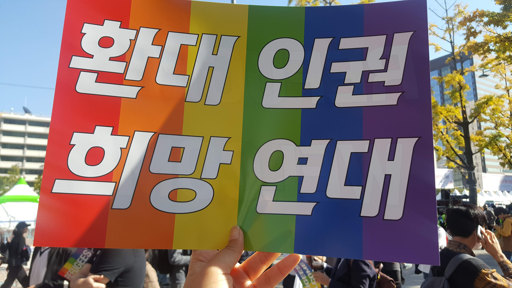
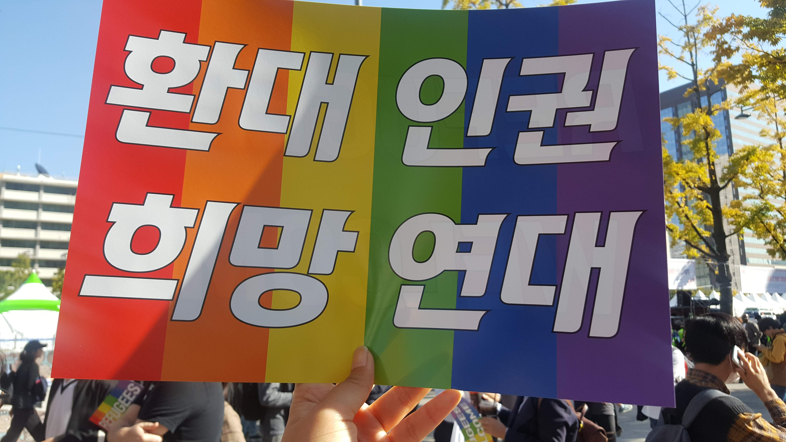

#소수자연대
많은 사람들이 간과하는 낮은 삶에 대해 관심이 많다. 개인의 어려움이 구조적인 문제에서 기인한 것을 알고 더운 숨으로 함께 문제를 해결해나가고 싶다. 2018년 '회대평등문화한마당', 2019년 '회대학생 공동대응 네크워크'를 통하여 학내 혐오의 문제와 교육권 문제를 학우들과 함께 해결하고자 했다. 2022년에는 대학교에서 벗어나, 중고등대안학교 '더불어가는배움터길'에서 길잡이교사로 일했다. 학생들과 상호작용하는 배움을 통해 연대의 숨결을 느낄 수 있었다.
 
